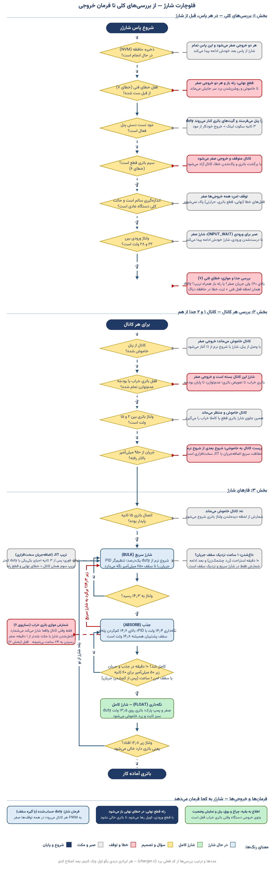

این صفحه رفتار فعلی برد را ساده توضیح میدهد. همهٔ عددها از کد فعلی برد برداشته شدهاند (فایلهای شارژر). هر دستگاه دو باتری ۱۲ ولتی دارد و هر باتری کانال شارژ جدا و رفتار یکسان دارد؛ پس توضیح زیر برای هر کانال است.
باتریای را وصل میکنی که ولتاژش ۱۱٫۹ ولت است (خالی):

ساختار کد شارژر بهصورت درختی؛ از بالا به پایین همان ترتیبی است که در هر پاس اجرا میشود. نام متغیرها نیامده؛ فقط کار هر بخش.
| شارژر به کجا فرمان میدهد | چه فرمانی | کی و با چه شرطی |
|---|---|---|
| PWM هر کانال (سختافزار شارژ) | duty حسابشدهٔ PID با گیرهٔ سقف مجاز | در هر پاس؛ در همهٔ توقفها (ورودی بد، خطاها، استراحت، کاملشدن) صفر میشود |
| رلهٔ قطع نهایی | بازکردن رله و قطع فیزیکی ورودی ترانس | خطای نهایی: سومین تریپ JIT همان کانال، یا قفل خطای فنی (۷)؛ تا پایان همین روشنبودن میماند؛ اگر ورودی قطع باشد کویل رها میشود تا باتری خالی نشود |
| چراغها و بوق (ماژول نمایش) | وضعیت هر کانال: در حال شارژ، کامل (سبز ثابت)، استراحت حرارتی (زرد چشمکزن)، باتری خراب (قرمز ثابت و الگوی بوق جدا) | از روی وضعیت فازها خوانده میشود؛ «شارژ کامل» فقط وقتی درست است که همهٔ کانالهای فعال در نگهداری باشند |
| تعویض خروجی (Changeover) | وتوی خروجی: باتریای که «خراب» قفل شده نباید خروجی دستگاه را بدهد | تا وقتی قفل باتری خراب هست؛ با تعویض واقعی باتری (نبودن ۳ ثانیه) پاک میشود |
| پنل و دیاگ | نمایش وضعیت فاز و duty هر کانال، شمارندهٔ شارژ باتری خراب و ثبت رویداد «شارژ کامل شد» و خطاها | در هر پاس بهروز میشود؛ پنل از همین راه پارامترها (مثل سقف ۲۴ ساعت) را هم تنظیم میکند |
| اگر این اتفاق افتاد | برد چه کار میکند | عددش |
|---|---|---|
| ورودی از ۲۲ ولت پایینتر یا از ۲۸ ولت بالاتر رفت | شارژ صفر میشود و برد در صبر میماند؛ برگشت خودش ادامه میدهد. | ورودی معتبر: ۲۲ تا ۲۸ ولت |
| سیم باتری وسط شارژ کشیده شد | خطای ۶: شارژ همان لحظه صفر میشود، چراغ قرمز چشمک میزند و سه بوق میآید. با وصل دوباره و ۱۵ ثانیه آرامسازی همهچیز به حالت عادی برمیگردد. | قطع باتری (خطای ۶) |
| کانال شارژ جریان نمیدهد (خرابی داخلی) | خطای ۷: آن کانال قفل میشود و شارژش کامل بسته میشود؛ فقط با خاموش و روشنکردن برد پاک میشود. | جریان خیلی کمِ ماندگار؛ سقف خطای سخت ۹۵۰ میلیآمپر |
| ولتاژ باتری در جذب زیر ۱۴٫۳ افتاد | برمیگردد به شارژ سریع و شمارش ۱۰ دقیقه از اول شروع میشود. | ۱۴٫۳ ولت |
| ولتاژ در جذب از ۱۴٫۶ رد شد | جریان پلهپله کم میشود تا ولتاژ برگردد. | ۱۴٫۶ ولت |
| یک ساعت پشتسرهم جریان کامل رفت | ۱۰ دقیقه استراحت؛ چراغ زرد چشمک میزند؛ بعد شارژ ادامه پیدا میکند. | ۱ ساعت کار، ۱۰ دقیقه استراحت |
| شارژ ۲۴ ساعت فعال بود ولی باتری کامل نشد | باتری خراب: شارژ قفل میشود، قرمز ثابت میماند و دیگر شارژ نمیکند. | پیشفرض ۲۴ ساعت؛ از پنل قابلتغییر (شناسهٔ ۱۲۵) |
| باتری خراب چطور پاک میشود؟ | اگر باتری ۳ ثانیه نباشد (سیمش کشیده شود)، شمارنده از اول شروع میشود وقتی باتری برگردد. | ۳ ثانیه نبودِ باتری |
| جریان ناگهانی (تریپ JIT) | کانال میایستد؛ بعد یکییکی و به ترتیب تریپ برمیگردند تا دوباره ناگهانی نپرد. | قفل ۳ ثانیه؛ احیای یکییکی |
| باتری در نگهداری زیر ۱۲٫۸ افتاد | شارژ از اول شروع میشود (شارژ سریع). | ۱۲٫۸ ولت |